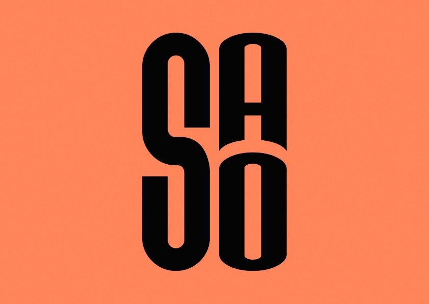

DISEÑO · UX/UI · MULTIMEDIA
Ideas que
toman forma.
Hola, soy Sara Sofia Moreno Castro, estudiante de Ingeniería en Multimedia. Me interesa crear experiencias visuales y digitales que conecten diseño, funcionalidad e historias.

01 / 05 Una mirada a mi proceso creativo
Diseño con intención.
Creatividad con propósito.
Experiencias que cuentan.
TRABAJO SELECCIONADO / 2023—2026
Proyectos.
Cinco exploraciones que reúnen diseño, narrativa, tecnología y comunicación visual.
Selecciona una tarjeta para conocer el análisis, desarrollo y resultado de cada proyecto.
UN POCO SOBRE MÍ / PERFIL
Diseño, observo,
aprendo y construyo.
Soy estudiante de Ingeniería en Multimedia con interés en diseño, UX/UI y desarrollo de propuestas visuales y multimedia. Mi formación integra diseño de interfaces, producción audiovisual, animación, modelado 3D, ilustración y programación web básica.
Me caracterizo por la organización, creatividad, responsabilidad y capacidad de trabajo colaborativo. Busco una oportunidad de práctica profesional en áreas de diseño, UX/UI o multimedia para aplicar mis competencias y continuar desarrollándome.
Descargar hoja de vidaHERRAMIENTAS Y CAPACIDADES
Lo que pongo
en práctica.
Competencias técnicas
Programas
Habilidades personales
Organización y gestión del tiempo · Creatividad · Trabajo en equipo · Adaptabilidad · Comunicación · Resolución de problemas · Empatía · Atención al detalle.
SELECCIÓN AUDIOVISUAL / SHOWREEL
Demo Reel.
Un espacio reservado para reunir piezas de edición, animación y producción multimedia.
PRÓXIMAMENTEHABLEMOS / CONTACTO
¿Creamos algo
interesante?
Estoy abierta a oportunidades de práctica y colaboración en diseño, UX/UI y proyectos multimedia.
sasomocas@gmail.com